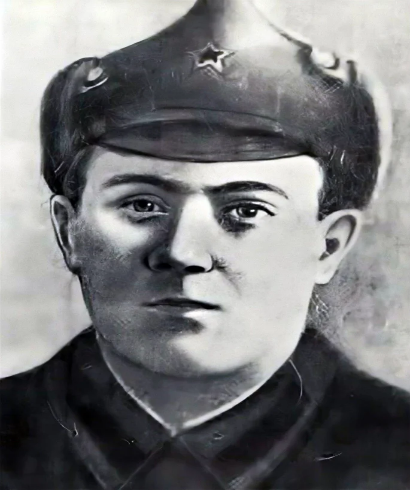

28 августа - 12 сентября 1942 года
Источник. История земли Волгоградской А.С. Скрипкин А.В., Луночкин, И.И. Курилла, с. 167.
По прорвавшемуся к Волге противнику советские войска нанесли контрудары и вечером 28 августа остановили его на северо-западных окраинах Сталинграда. Враг был также остановлен войсками Юго-Восточного фронта на южных подступах к городу. К исходу 2 сентября 62-я и 64-я Армии отошли на внутренний оборонительный обвод, где вели бои до 12 сентября. Первоначальный план гитлеровского командования взять город в течение недели был сорван. С 12 сентября оборона Сталинграда была возложена на 62-ю Армию (с 10 сентября в командование вступил генерал-лейтенант В.И. Чуйков). Развернулись ожесточенные бои в Сталинграде.
Источник: Волгоградская правда от 22.01.1983 г.
И на земле этой лежали погибшие герои – ополченцы. Первые потери наших истребительных батальонов. Ольга Ковалева лежала, раскинув руки, косынка слетела с головы, ветер растрепал волосы, рядом – винтовка.
Событие. 10 дивизия войск НКВД.
С 13 июля 1942 года на основании решения Военного совета Юго-Западного фронта дивизия приступила к несению ответственной службы на подступах к городу. Перед ней стояла задача: обеспечить безопасность и порядок в городе, не допустить проникновения на его территорию шпионов, диверсантов, дезертиров. Кроме того, необходимо было направить команды, обозы, эвакуируемое население в обход города. А когда враг находился на подступах к Сталинграду 10-я дивизия войск НКВД представляла собой ядро гарнизона. Формировалась она из разных полков в начале 1942 года. В ее составе были уральские металлурги, машиностроители, комсомольцы-сибиряки, сотрудники НКВД. Многие бойцы, командиры и политработники прибыли в дивизию по направлению партийных организаций Сталинграда. Они встали на защиту родного города.
Известно, что первый удар фашисты нанесли с северо-запада: 23 августа головные части мотопехоты и танков противника вторглись в район поселков Орловка и Рынок. Особенно ожесточенный характер носили атаки противника в районе тракторного завода, где вместе с истребительными батальонами прочно удерживал рубежи переброшенный из района Опытной станции 282-й полк майора М.Г. Грущенко. Отбивая в день более десятка вражеских атак, полк наносил гитлеровцам большой урон.
Подвиг
В первые же дни обороны города комсорг взвода 282-го полка Иван Шевцов совершил такой же подвиг, какой впоследствии был прочно связан с именем Александра Матросова. На одном из участков наступлению наших бойцов мешала огневая точка немцев. Тогда Шевцов принял решение подавить пулемет. Он приблизился к дзоту и бросил две гранаты, но противник не прекращал огня. Бойцы залегли, наступление приостановилось. В этот момент отважный комсомолец в решительном рывке своим телом закрыл амбразуру дзота. Первая листовка в полку была посвящена героическому поступку отважного комсорга. Воины поклялись отомстить фашистам за погибшего товарища и эту клятву сдержали.
5 сентября 1942 года рота автоматчиков 272-го полка, отбив атаки врага, перешла в наступление. Стремителен был удар воинов чекистов. Уже близко траншеи гитлеровцев. Но неожиданно из замаскированного вражеского дзота ударил станковый пулемет. Рота залегла в складках местности. Казалось, атака захлебнулась, и никакая сила не оторвет бойцов от земли. В эту критическую минуту над полем боя во весь рост поднялся красноармеец Алексей Ващенко.

С криком «За Родину!» он рванулся вперед к вражеской огневой точке. Раненый, истекающий кровью. Он ползком добрался до амбразуры вражеского дзота и своим телом закрыл ее. Пулемет замолк на какое-то мгновение, но и этого было достаточно: рота, воодушевленная героическим поступком бойца-чекиста Ващенко, смяла врага. За этот подвиг А.Е. Ващенко был награжден орденом Ленина, его имя было навечно занесено в списки 1-й роты полка.
За 56 дней участия в боях за Сталинград от бойцов и командиров дивизии поступило более 500 устных и письменных заявлений о приеме их в ряды партии, 239 из них были вручены партийные билеты, остальные воины героически погибли в смертельных схватках с фашистами.
Во время наступления, под непрекращающимся пулеметным огнем врага, 3-й батальон 282-го стрелкового полка залег. Эта задержка могла быть использована для удара по обнаженным флангам других наших подразделений. Комиссар полка А.М. Карпов быстро оценил опасность создавшегося положения. Чтобы обеспечить успех полку, вместе с командующим батальоном старшим лейтенантом Морозом комиссар сел в подошедший танк, через несколько минут боевая машина прорвалась сквозь полосу взрывов и начала утюжить гусеницами огневые точки и таранить орудия. Огонь противника был ослаблен. Воспользовавшись этим, воины-чекисты, как один бросились в рукопашную схватку. Враг дрогнул и оставил свои позиции. Но два прямых попадания подожгли машины. Так ценой собственной жизни комиссар полка А.М. Карпов спас положение и обеспечил выполнение задачи. Родина по достоинству оценила его подвиг, посмертно наградив орденом Красного Знамени.
71-я пехотная и 24 танковая дивизии противника, прорвав наш фронт, вышли к Сталинграду с запада. На этом участке, обороняемом двумя батальонами 272-го стрелкового полка 10-й дивизии во взаимодействии с другими подразделениями, развернулись жесткие бои. Отбив яростные атаки танков и пехоты противника, бойцы в четырехдневных боях, неоднократно контратакуя, измотали части 71-ой немецкой дивизии, затем потеснили врага. Дивизия противника была настолько обескровлена в этих боях, что гитлеровское командование решило спешно отвести ее в тыл. Скупые строки архивных документов воссоздают нам образы мужественных и стойких, несгибаемых и бесстрашных командиров 272- го стрелкового полка.
Во время боев у опытной станции против расположенного здесь 3-го батальона фашисты бросили тридцать семь танков и свыше батальона пехоты. Только на участок 9-йроты шло восемнадцать танков и до батальона пехоты. Наступление врага поддерживалось авиацией и минометными батареями. В первых рядах сражающихся чекистов находились батальонный комиссар Иван Щербина и политрук Дмитрий Яковлев. Их бесстрашие воодушевляло бойцов.
Огнем сорокапяток. Противотанковых ружей, гранатами и бутылками с горючей смесью было подбито и сожжено восемь танков, но остальным удалось пробиться в расположение обороны роты. Создалась критическая ситуация. Большинство бойцов впервые участвовало в таком жарком бою, но они не дрогнули. В этот момент младший политрук Дмитрий Яковлев с двумя противотанковыми гранатами бросился под головной фашистский танк, взорвав себя вместе с вражеской машиной.
15 сентября 1942 года гитлеровцы после сильной бомбежки боевых порядков 272-го полка ворвались на территорию городского кладбища. Силы были неравными. Против двух батальонов действовала пехотная и танковая дивизии фашистских захватчиков. Учитывая всю важность создавшейся тяжелой обстановки, мужественный командир роты лейтенант Яковлев своим личным примером поднял роту в контратаку. Бойцы дружно поддержали своего командира и загремело: «Ура!». Завязалось рукопашная схватка. Фашисты не выдержали рукопашного боя и с большими потерями откатились назад.
Смертельно раненный лейтенант Яковлев говорил своим бойцам: «Храните свято честь нашей роты. Ни одного метра земли не сдавайте врагу, пока в жилах будет хоть капля крови». Бойцы выполнили наказ своего командира. Здесь враг терпел одно поражение за другим. В этом же бою старший сержант артиллерист Сазонов подбил из 45-миллиметровой пушки прямой наводкой несколько танков. Мужественно сражался с фашистскими захватчиками и командир отделения 272-го полка старший сержант Д.П. Степаненко. Воспользовавшись потерей бдительности врага, он незаметно подполз к минометной позиции, снял часового и, забросав окоп гранатами, уничтожил 4 миномета и до взвода автоматчиков.
В середине сентября противник, подтянув крупные силы, начал наступление в районе центра и южной части Сталинграда. Навстречу рвущемуся вперед противнику был брошен 272-й полк майора Савчука с некоторыми приданными ему подразделениями. В уличных боях эта часть вновь показала образец отваги и стойкости. Пятнадцать суток оборонял полк города, не отступив под натиском врага ни на шаг. Генерал-майор А.А. Сараев, бывший комдив, в своих воспоминаниях дает высокую оценку полка.
С большим чувством отзывается А.А. Сараев и о войне-чекисте, чей образ стал примером для бойцов, комиссаре 272-го полка Иване Мефодьевиче Щербине. Комиссар, презирая смерть, всегда появлялся на самых ответственных участках. Например, 8 сентября, когда пехота противника при поддержке танков повела непосредственное наступление на подразделения полка, комиссар Щербина вооруженный маузером, с гранатами за поясом, неоднократно лично водил роту автоматчиков в контратаки.
Когда немецкие танки внезапно атаковали наши позиции в районе сквера рядом с драмтеатром и тем самым внесли некоторое замешательство в ряды наших бойцов, среди стрельбы и грохота раздался голос комиссара: «Стоять на месте!». Танки били прямой наводкой по командному пункту. Все рушилось, но бойцы не отходили и бесстрашно отражали врага. Три подожженных танка пылали. Немцы приостановили наступление. В этот момент комиссар Щербина подал команду: «В атаку, за Родину!» Бойцы, воодушевленные бесстрашием комиссара, бросились вперед, и атака была отбита в Сталинграде.